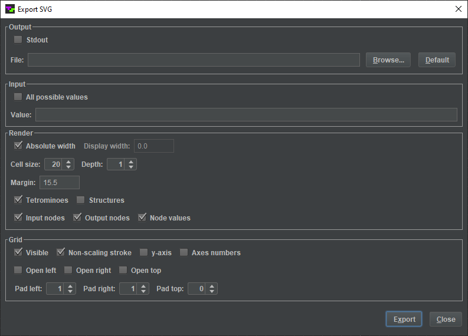

Contents > Applications > TetrominoScript Editor
Export SVG
The Export SVG dialog, shown below, renders a circuit to an SVG file. It produced the diagrams for this text.
Select to open it.

Here are descriptions of its components:
-
- - When checked, the dialog exports to the standard output stream instead of a file.
- - When the checkbox is unchecked, the dialog exports to a file with this name.
- - Opens a file chooser for the export filename.
- - Resets the filename to the default value.
-
- - When checked, the dialog renders the circuit for all possible input values to a single SVG. It works only when there are four or fewer input nodes.
- - When is unchecked, the dialog uses this binary string to set the input node states.
-
- - When checked, the dialog does not scale the SVG.
- - When is unchecked, the dialog scales the SVG to this width.
- - Unscaled grid cell size.
- - Recursive rendering depth.
- - Amount of pixel padding on all sides of the SVG.
- - Hides/shows the tetrominoes.
- - Hides/shows the dark rectangles that represent components.
- - Hides/shows the input nodes.
- - Hides/shows the output nodes.
- - Hides/shows the zeros and ones that indicate node states.
-
- - Hides/shows the grid.
- - When checked, grid lines are rendered at the same thickness regardless of scaling.
- - Hides/shows the y-axis.
- - Hides/shows the axes numbers.
- - When checked, the grid appears open on the left, suggesting it continues beyond the displayed region.
- - When checked, the grid appears open on the right, suggesting it continues beyond the displayed region.
- - When checked, the grid appears open on the top, suggesting it continues beyond the displayed region.
- - Number of empty columns to insert on the left.
- - Number of empty columns to insert on the right.
- - Number of empty rows to insert on the top.
-
- - Generates an SVG.
- - Dismisses the dialog.
The animated tetromino diagrams were coded by hand. Some are modified versions of files produced by TSE.